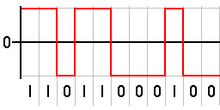
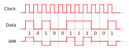
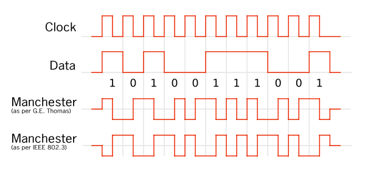

Códigos de línea
En telecomunicaciones, un código en línea o código de línea (modulación en banda base) es un código utilizado en un sistema de comunicación para propósitos de transmisión.
Los códigos de línea son frecuentemente usados para el transporte digital de datos. Estos códigos consisten en representar la señal digital transportada respecto a su amplitud respecto al tiempo. La señal está perfectamente sincronizada gracias a las propiedades específicas de la capa física. La representación de la onda se suele realizar mediante un número determinado de impulsos. Estos impulsos representan los unos y los ceros digitales. Los tipos más comunes de codificación en línea son el unipolar, polar, bipolar y Manchester.
Los problemas a los que se enfrentan los distintos códigos de línea son:
- La componente DC
- Disponer de un reloj fiable en el receptor
- Que el receptor se sincronice en fase con la señal recibida
Codificaciones más usadas
NRZ

Bipolar o AMI

Manchester
